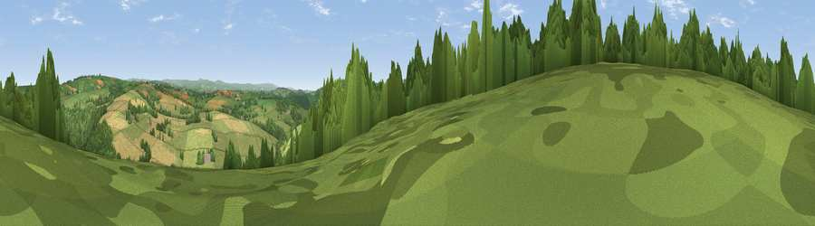

Viewpoint near Higherland
#13515 in England · top 22% of its area beats it · near HigherlandWhere it is
The exact computed spot (SX 38325 76575). Click the marker for map links.
The view, rendered

A 360° render of this exact spot computed from the terrain model, tree cover and land cover — summer colours, afternoon light, calibrated against photographs of famous viewpoints. Real trees, hedges and buildings will differ in detail.
The panorama
Grey silhouette: terrain skyline in each direction (720 bearings, Earth curvature and refraction included). Dashed green: skyline with trees (+15 m) and buildings (+8 m) as obstacles. Blue strip: how far the ground is visible on each bearing.
Where the view opens
Wedge length = distance to the farthest visible ground on that bearing (vegetation-aware). Rings at 10, 25 and 50 km.
What fills the view
51% grassland · 39% woodland · 10% cropland
Angular shares of the visible panorama (visual magnitude), not map area. Landscape diversity 0.42 (0–1 Shannon).
Key numbers
More beautiful places nearby
The staircase of upgrades: each row has a higher view potential than everything closer. Driving times are estimates from straight-line distance, calibrated against real road routing — check an actual route before setting out.
| Place | Direction | Drive | Score |
|---|---|---|---|
| Viewpoint near Milton Abbot | ENE · 2 km | ~5 min | 64.2 |
| Viewpoint near Kelly Bray | S · 5 km | ~11 min | 73.8 |
| Kit Hill | S · 5 km | ~12 min | 80.3 |
| Viewpoint near Dousland | ESE · 18 km | ~32 min | 81.0 |
| Viewpoint near Lee Moor | SE · 22 km | ~37 min | 82.7 |
| Viewpoint near Downderry | S · 23 km | ~38 min | 83.5 |
| Viewpoint near Lesnewth | WNW · 31 km | ~48 min | 87.7 |
| Viewpoint near Crackington Haven | WNW · 31 km | ~48 min | 88.1 |
50.56650, -4.28426 · source: screening · position refined by local search. Computed location — check access rights before visiting.